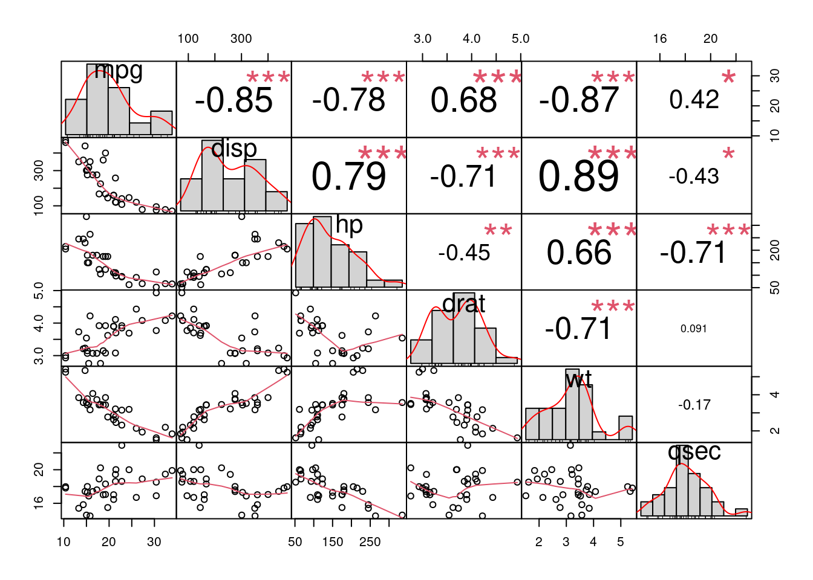
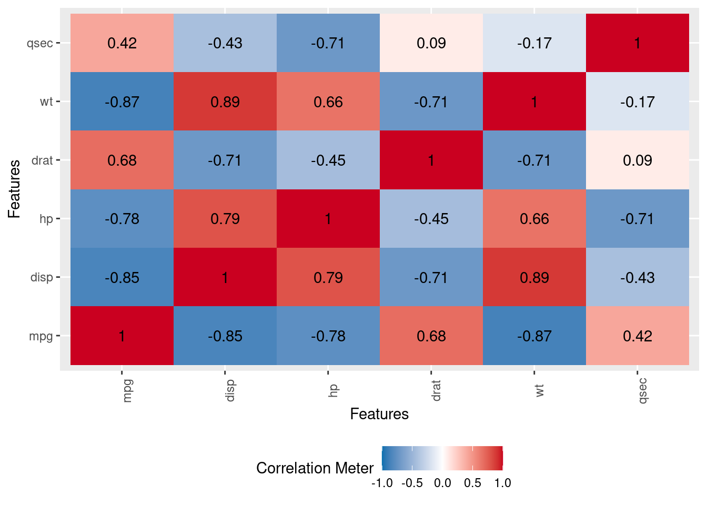
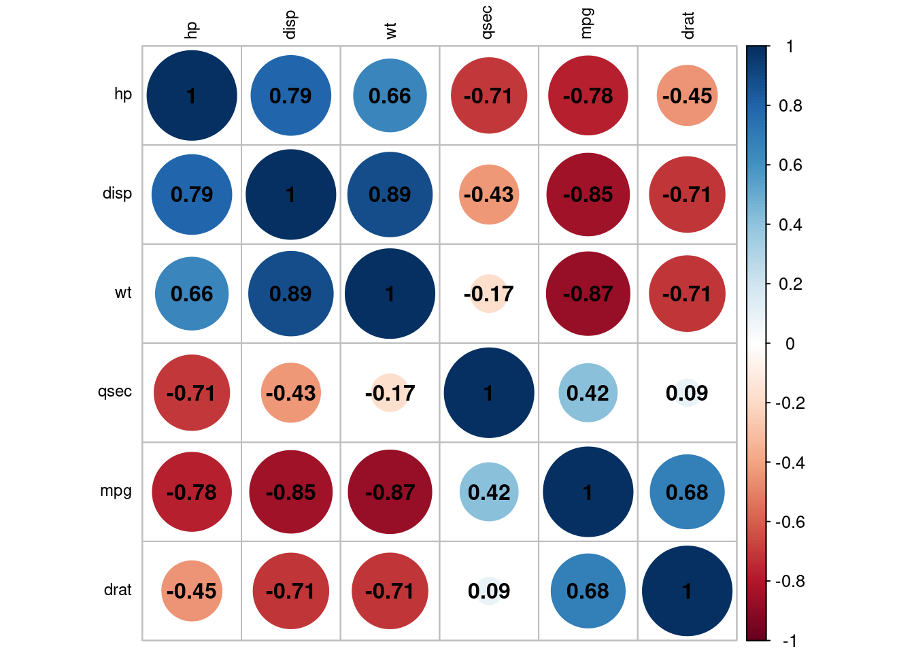
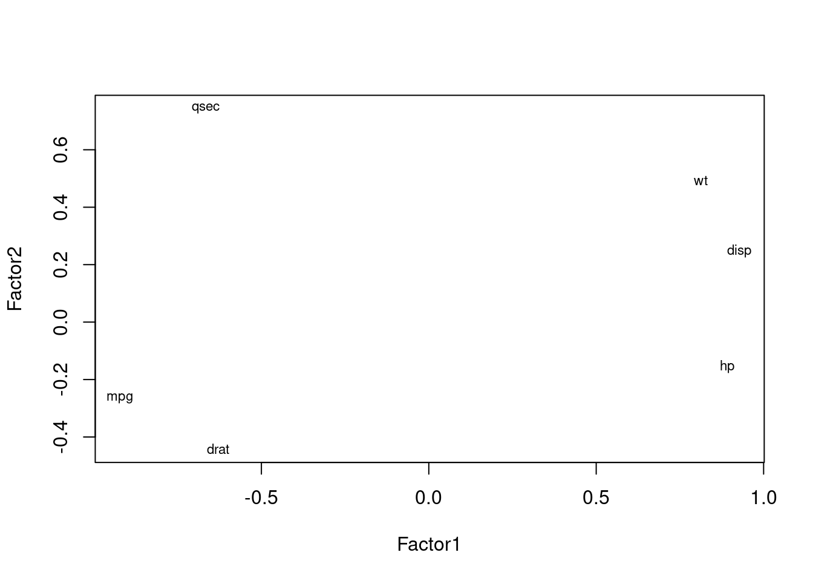
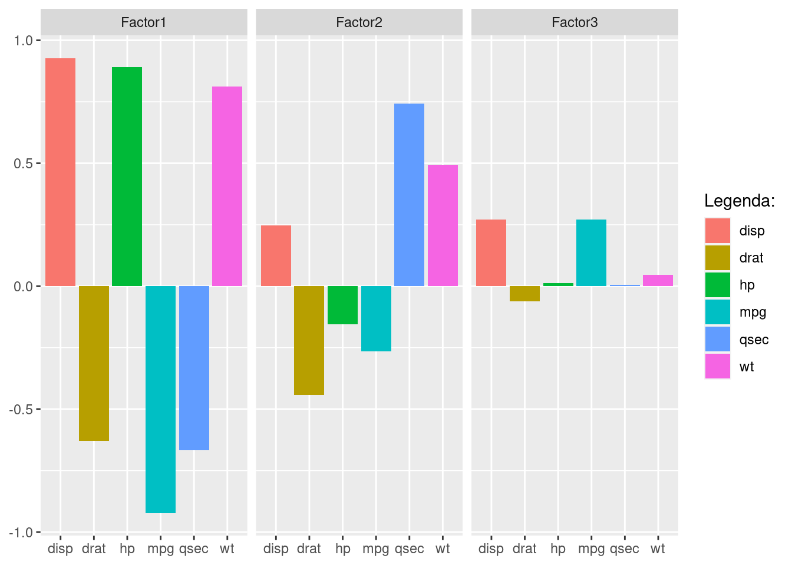
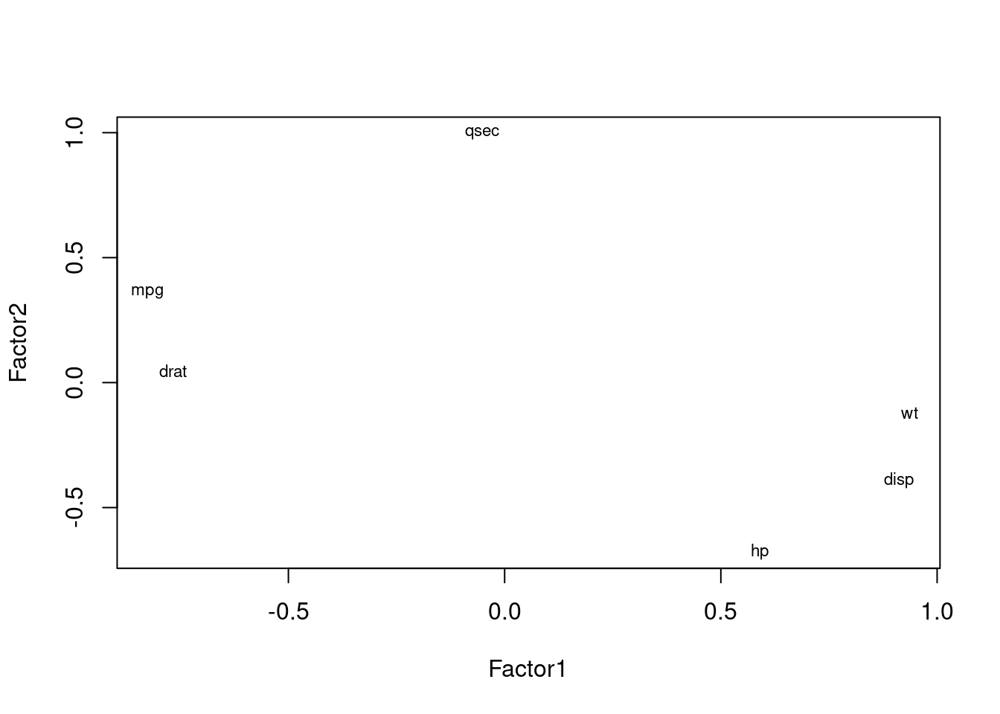
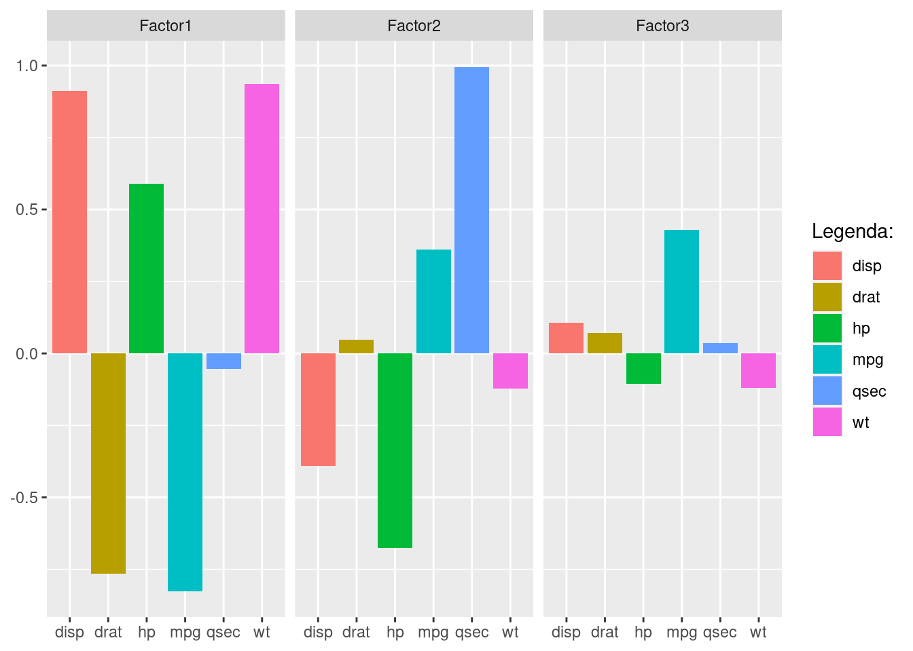
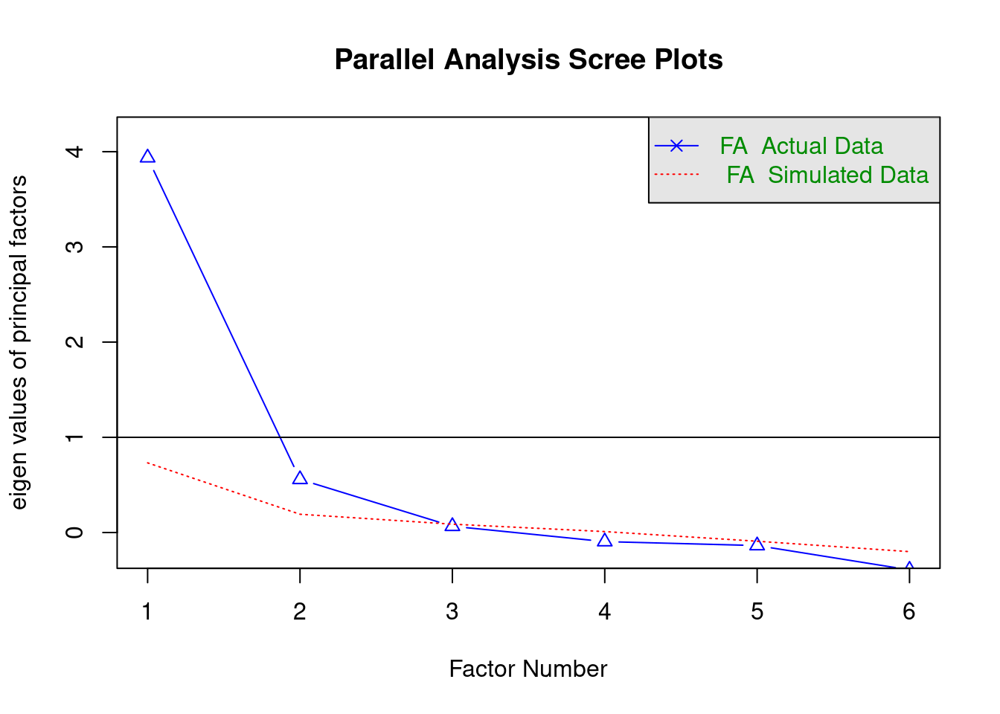

library(tidyverse)
library(janitor)
library(gt)
library(PerformanceAnalytics)
library(plotly)
library(kableExtra)
library(ggrepel)
library(factoextra)
library(psych)Análise Fatorial Exploratória - EFA
Base de Dados
# Selecionar variáveis quantitativas
df <- mtcars |>
select (mpg, disp, hp, drat, wt, qsec) |>
data.frame()
df_std <- scale(df) |> data.frame()Correlações
chart.Correlation(df, histogram = TRUE, method = "pearson")
DataExplorer::plot_correlation(df)
#outra opcão:
corrplot::corrplot(cor(df, use="complete.obs"), order = "hclust", tl.col='black', tl.cex=.75, addCoef.col = T) 
KMO e Bartlett
Verificamos se os dados estão adequados para uma análise fatorial.
KMO
#Cutoff sugerido (Kairse 1974) >= 60.
psych::KMO (r = cor(df))Kaiser-Meyer-Olkin factor adequacy
Call: psych::KMO(r = cor(df))
Overall MSA = 0.76
MSA for each item =
mpg disp hp drat wt qsec
0.83 0.78 0.83 0.85 0.70 0.52 Teste de esfericidade de Bartlett
Validar homogeneidade da variância
bartlett.test(df)
Bartlett test of homogeneity of variances
data: df
Bartlett's K-squared = 831.17, df = 5, p-value < 2.2e-16EFA
Análise Fatorial Exploratória
Nossos dados passaram com nível de significância de 5%.
#EFA Sem rotação, com maxima verossemelhanca (ML).
efa <- factanal(~ ., data= df_std, factors = 3, rotation = "none")
efa
Call:
factanal(x = ~., factors = 3, data = df_std, rotation = "none")
Uniquenesses:
mpg disp hp drat wt qsec
0.005 0.005 0.183 0.406 0.095 0.005
Loadings:
Factor1 Factor2 Factor3
mpg -0.922 -0.266 0.272
disp 0.928 0.247 0.271
hp 0.890 -0.155
drat -0.629 -0.441
wt 0.812 0.493
qsec -0.666 0.742
Factor1 Factor2 Factor3
SS loadings 4.003 1.145 0.153
Proportion Var 0.667 0.191 0.026
Cumulative Var 0.667 0.858 0.884
The degrees of freedom for the model is 0 and the fit was 0.0414 # SS Loadings: Estes são as somas dos quadrados (SS) das cargas, ou seja, os eigen values.
# .Eles explicam as variancias de todas as variáveis de determinado fator.
# Como regra geral (Kaiser), se um fator tem eigenvalue maior que 1, ele é importante.
# Neste caso, fatores 1 e 2 parecem ser importantes. Este valor pode ser calculado a partir das cargas: Ex: sum(efa$loadings[,1]^2) para o ev do primeiro fator.]
#A comunalidade, é a soma dos quadrados de todos os fatores dada uma vaiável. A Singularidade é 1- Comunilidade. Por exemplo. Para a variável mpg temos Uniqueness = (1- sum(efa$loadings[1,]^2))
cargas <- efa$loadings[,1:3]
plot(cargas, type = "n")
text (cargas, labels = names(df), cex=.7)
data.frame(cargas) |>
mutate(var = names(df)) |>
pivot_longer(cols = !var) |>
mutate(var = factor(var)) |>
ggplot(aes(x = var, y = value, fill = var)) +
geom_col() +
facet_wrap(~name) +
labs(x = NULL, y = NULL, fill = "Legenda:") 
Rotacionando a matriz
# Usando varimax
efa_rot <- factanal(~ ., data= df_std, factors = 3, rotation = "varimax")
efa_rot
Call:
factanal(x = ~., factors = 3, data = df_std, rotation = "varimax")
Uniquenesses:
mpg disp hp drat wt qsec
0.005 0.005 0.183 0.406 0.095 0.005
Loadings:
Factor1 Factor2 Factor3
mpg -0.825 0.361 0.428
disp 0.911 -0.391 0.107
hp 0.590 -0.676 -0.105
drat -0.766
wt 0.936 -0.122 -0.119
qsec 0.995
Factor1 Factor2 Factor3
SS loadings 3.326 1.749 0.226
Proportion Var 0.554 0.291 0.038
Cumulative Var 0.554 0.846 0.884
The degrees of freedom for the model is 0 and the fit was 0.0414 cargas <- efa_rot$loadings[,1:3]
plot(cargas, type = "n")
text (cargas, labels = names(df), cex=.7)
data.frame(cargas) |>
mutate(var = names(df)) |>
pivot_longer(cols = !var) |>
mutate(var = factor(var)) |>
ggplot(aes(x = var, y = value, fill = var)) +
geom_col() +
facet_wrap(~name) +
labs(x = NULL, y = NULL, fill = "Legenda:") 
Análise Paralela
corpdat1 <- cor(df, use="pairwise.complete.obs")
fa.parallel(x=corpdat1, fm="minres", fa="fa")
Parallel analysis suggests that the number of factors = 2 and the number of components = NA